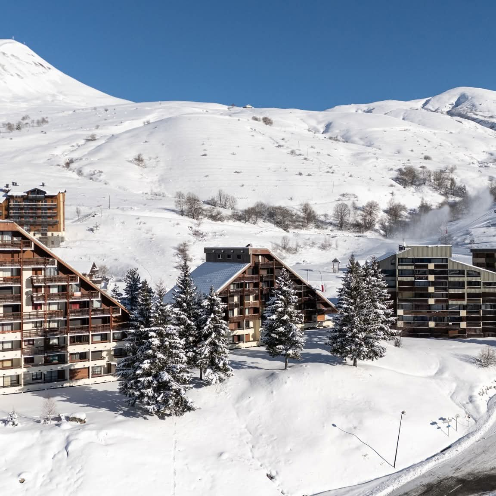
Saint-François-Longchamp · Savoie
Votre refuge au pied des pistes
Un studio pensé pour un séjour sans contrainte, face au télésiège du Mollaret : les pistes à 100 mètres, les commerces à pied, et une vue qui n'appartient qu'à vous.
Le studio
Confort et ambiance montagnarde
Situé au rez-de-chaussée de la résidence Le Grand Pic, ce studio de 2 à 6 personnes a été refait pour vous offrir tout le nécessaire comme à la maison, mais en vacances : un coin repas convivial, une cuisine neuve entièrement équipée, et une salle de bain moderne avec douche à l'italienne.
L'atout du lieu : sa situation. Le télésiège du Mollaret, qui donne un accès direct vers Valmorel, se trouve à moins de 50 mètres. Écoles de ski, location de matériel et commerces essentiels sont accessibles à pied, à moins de 100 mètres.
- Cuisine neuve équipée : plaque à induction, four, micro-ondes, lave-vaisselle 10 couverts, cafetière Senseo, grille-pain
- Réfrigérateur avec compartiment congélation
- Salle de bain refaite : douche à l'italienne, WC, sèche-serviette, fil à linge
- Balcon avec vue dégagée sur les montagnes
- Casier à skis privatif sur le même étage, range-chaussures à l'entrée
- Parking gratuit devant l'immeuble, entrée sécurisée
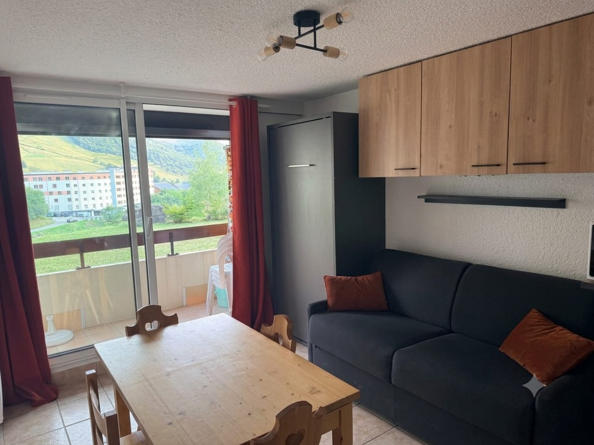
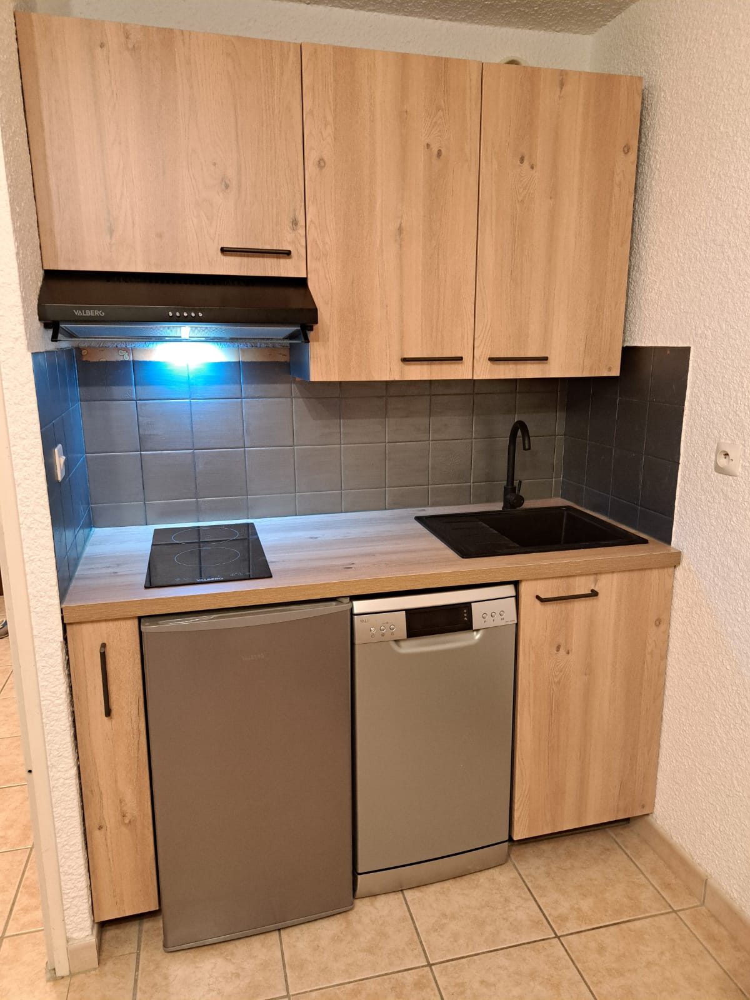
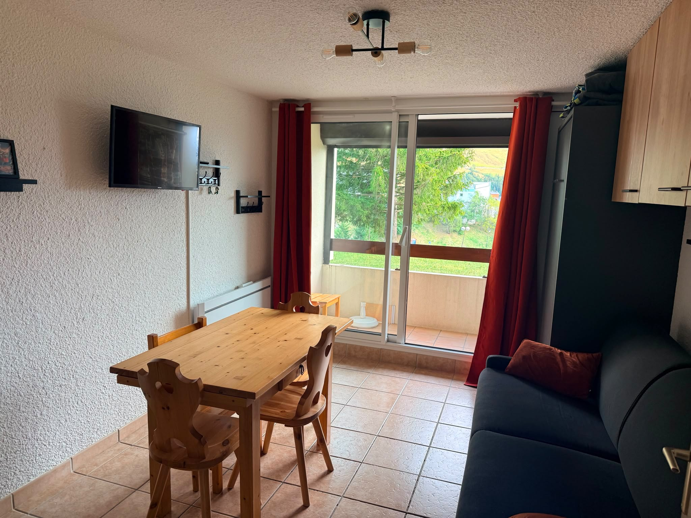
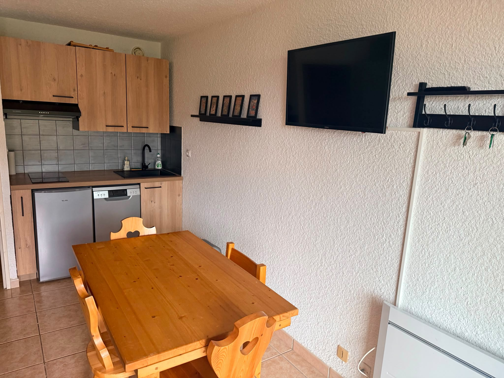
Couchages
Une capacité modulable, jusqu'à 6 personnes
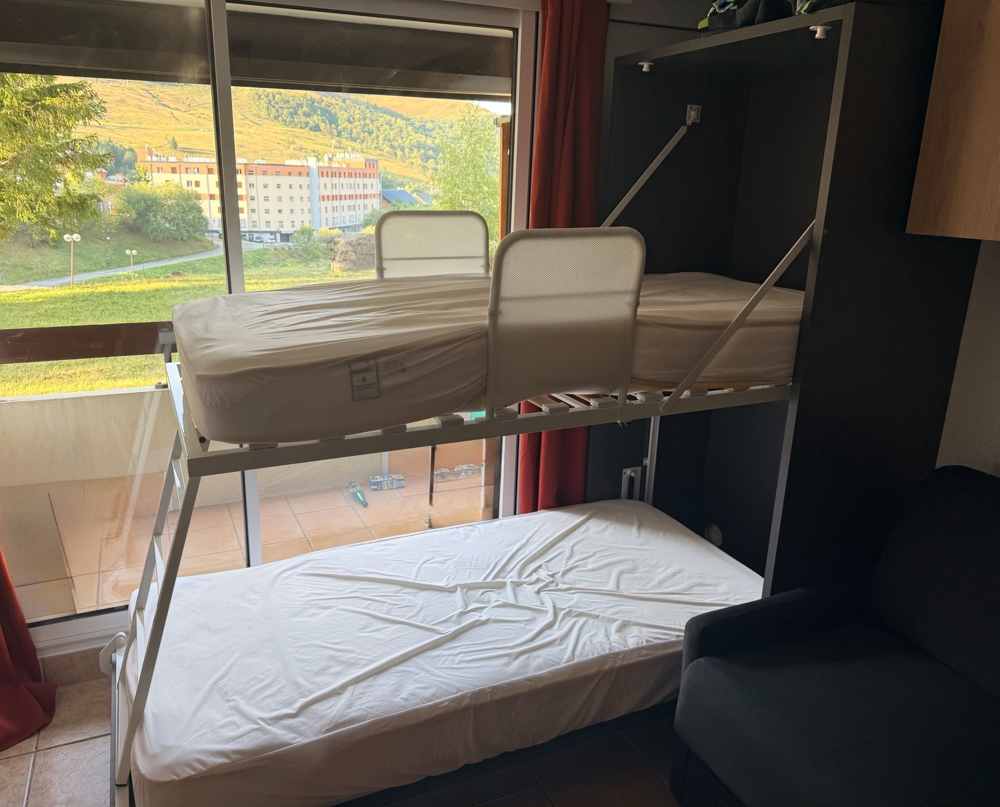
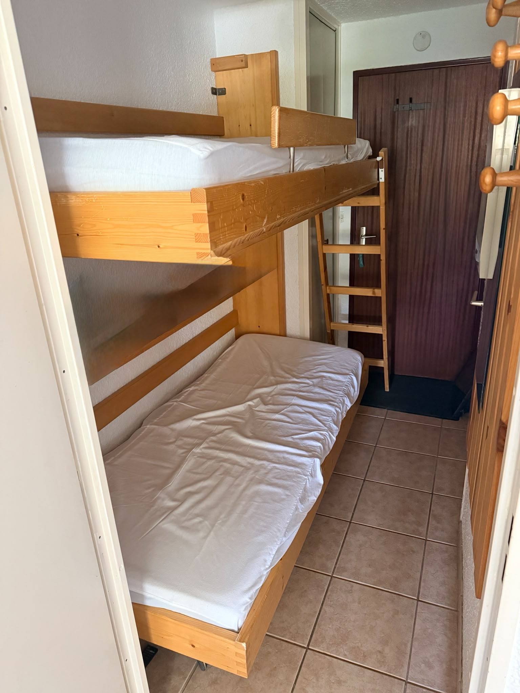
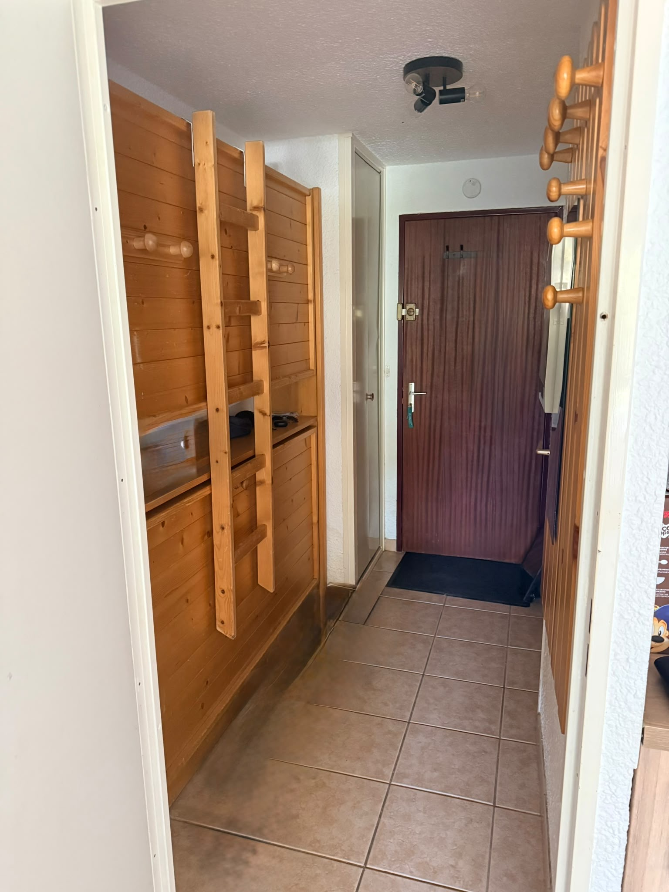
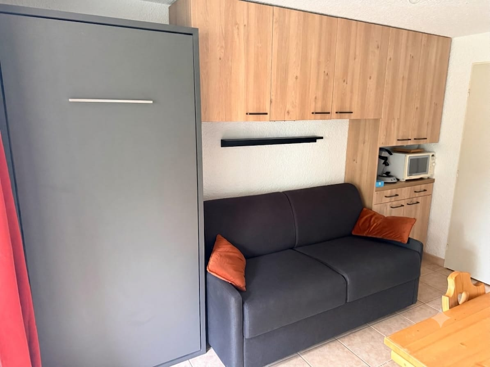
Le canapé-lit du séjour offre un vrai matelas de 180 cm de large, pensé pour un vrai confort de sommeil après une journée sur les pistes — pas un matelas d'appoint.
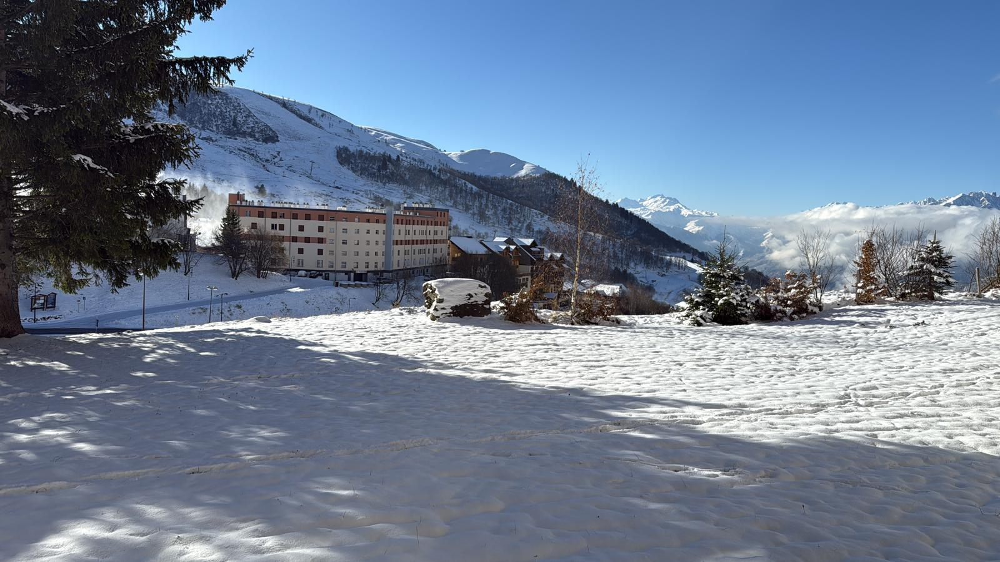
Vue imprenable depuis le balcon, hiver comme été
Emplacement
À Saint-François-Longchamp, tout est à portée de pas
Station familiale et conviviale de Maurienne, entre 1200 m et 2832 m d'altitude, reliée à un domaine de 165 km de pistes. Autour de l'appartement, l'essentiel se rejoint à pied. Plus d'informations sur le site officiel de la station.
- Télésiège du Mollaret — moins de 50 m, accès direct vers Valmorel
- Boulangerie — environ 100 m (une parmi plusieurs dans la station)
- Sherpa & Spar — deux supérettes à proximité immédiate
- 2 fromageries-charcuteries — spécialités savoyardes à deux pas
- Restaurants — de nombreuses adresses sur le haut de la station
- Espace bien-être et activités — piscine, sauna, hammam, jacuzzis, massages, bar, bowling et salle de sport à 100 m
Forfaits de ski
Le Grand Domaine relie Saint-François-Longchamp à Valmorel sur 165 km de pistes, avec des tarifs avantageux réservés en ligne : forfait journée dès 53 €, forfait 6 jours Grand Domaine dès 299,90 € (moins cher en réservant tôt). Tarifs et promotions à jour sur le site officiel des forfaits.
Galerie
L'appartement en images
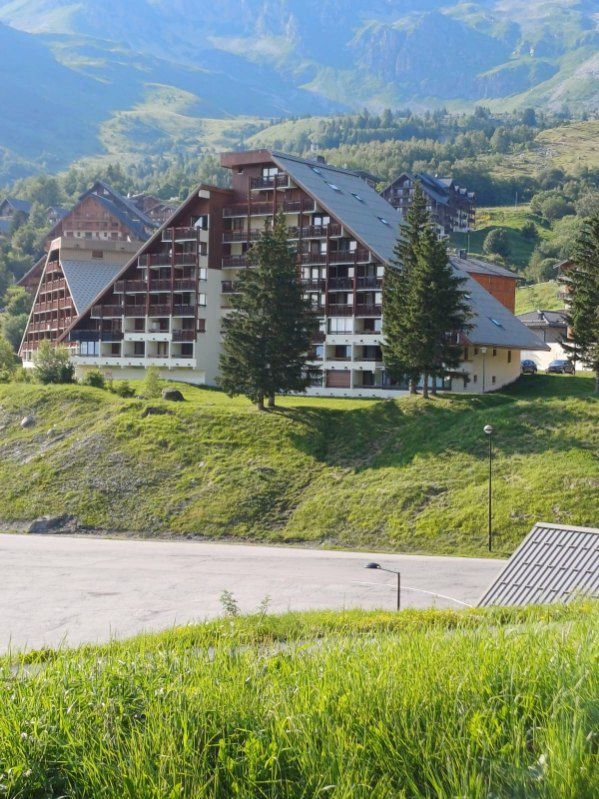
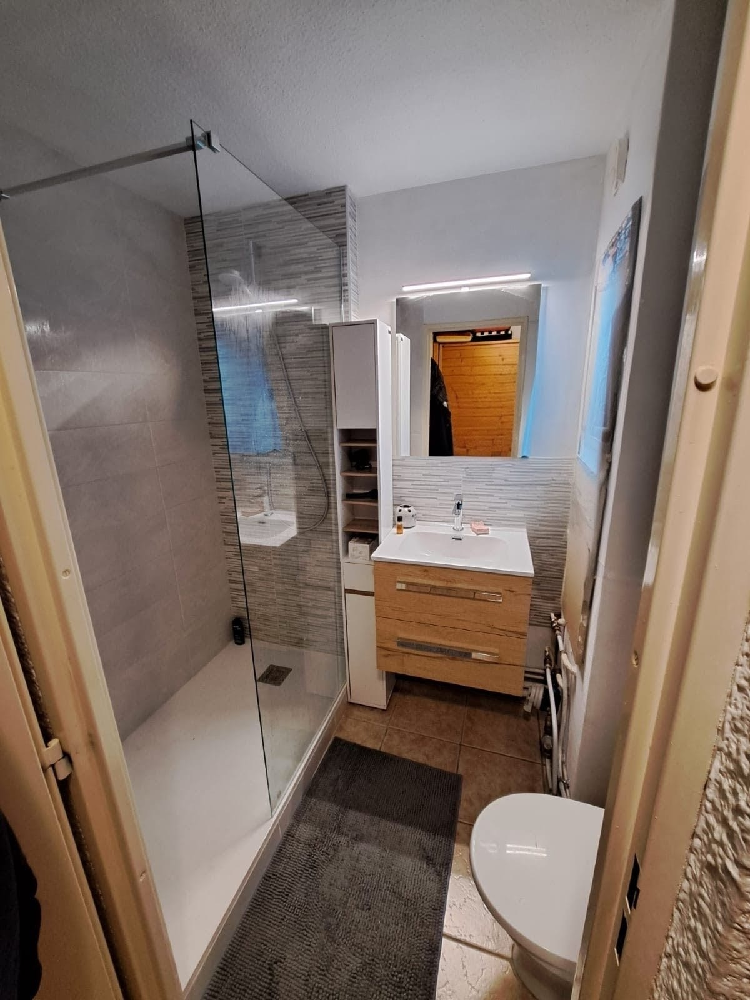
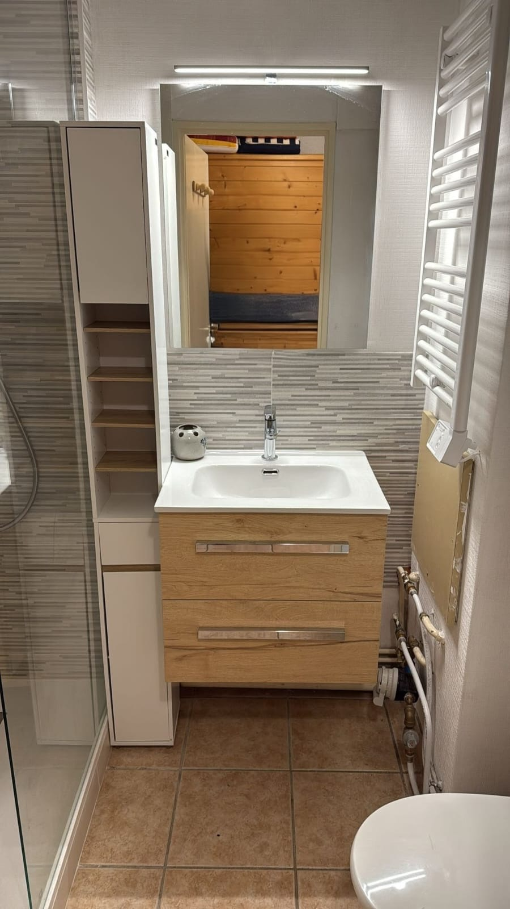
Questions fréquentes
Tout ce qu'il faut savoir avant de réserver
La cuisine, neuve, comprend une plaque à induction, un four, un micro-ondes, un lave-vaisselle pour 10 couverts, une cafetière Senseo, un grille-pain, ainsi qu'un réfrigérateur avec compartiment congélation et des rangements pour la vaisselle et les couverts. De quoi cuisiner normalement pendant tout le séjour.
Le studio accueille de 2 à 6 personnes : deux lits superposés dans le séjour, deux lits superposés dans l'entrée, et un canapé-lit confortable dans le séjour.
Un parking gratuit se trouve directement devant l'immeuble. L'entrée de la résidence est sécurisée.
Un casier à skis privatif est mis à disposition, sur le même étage que l'appartement. Un range-chaussures est également disponible à l'entrée du studio.
Choisissez vos dates dans le calendrier et complétez le formulaire ci-dessous. La demande est envoyée directement par email ; vous recevrez une confirmation dans les meilleurs délais.
Disponibilités & réservation
Demander une réservation
Vos dates ne correspondent pas exactement à ce que propose le calendrier ? Précisez-le dans le message ci-contre : on s'adapte selon les disponibilités, en échangeant par email.